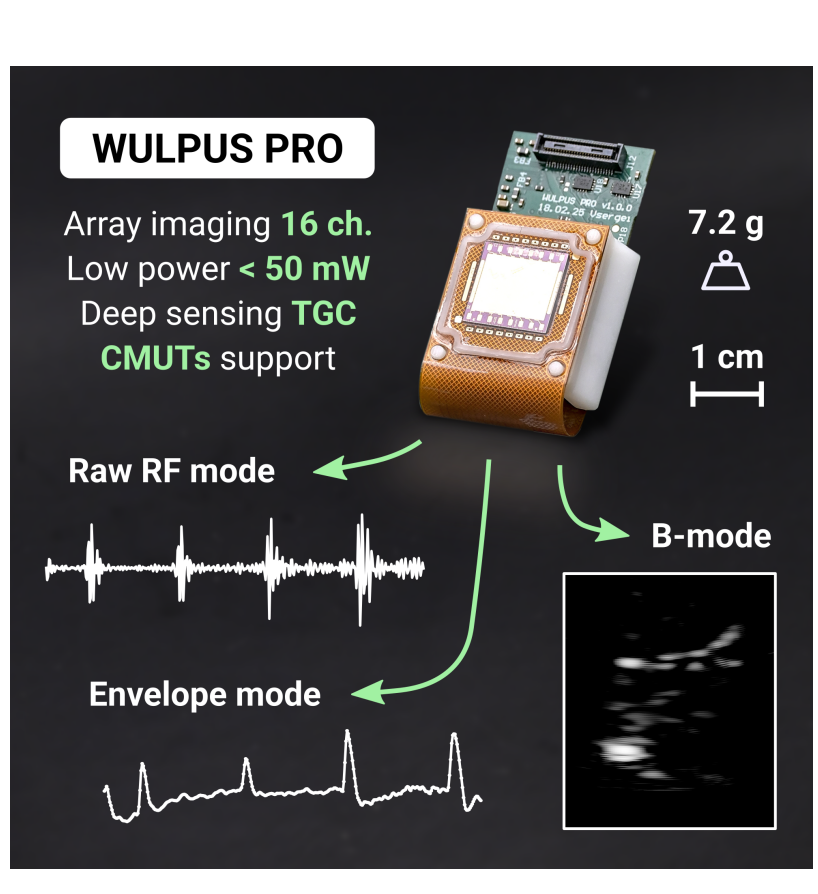
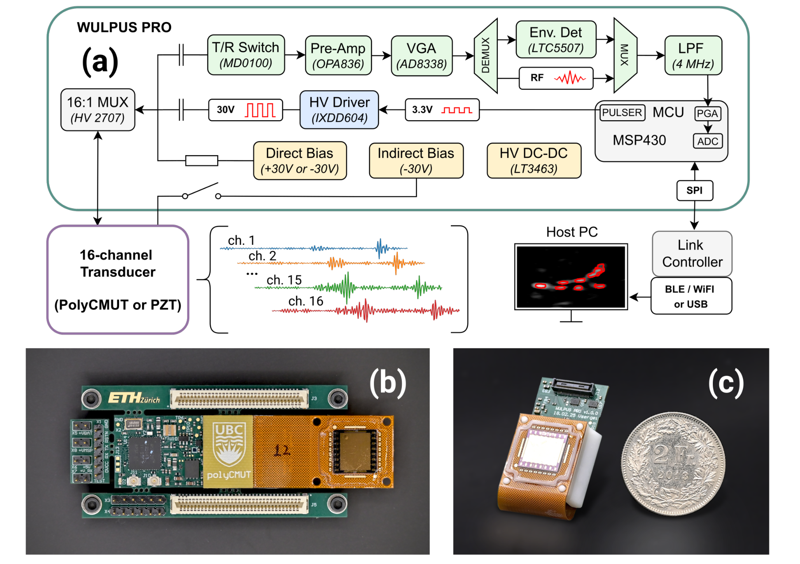
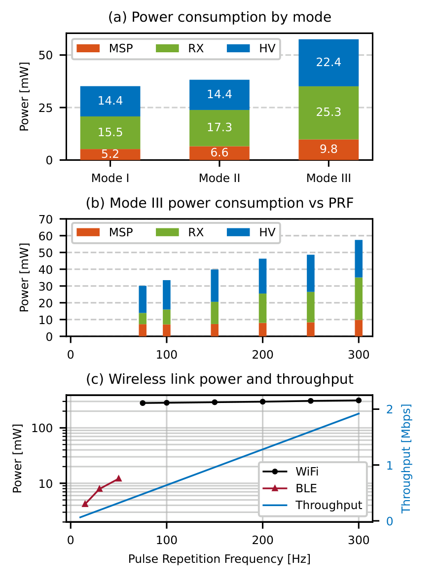
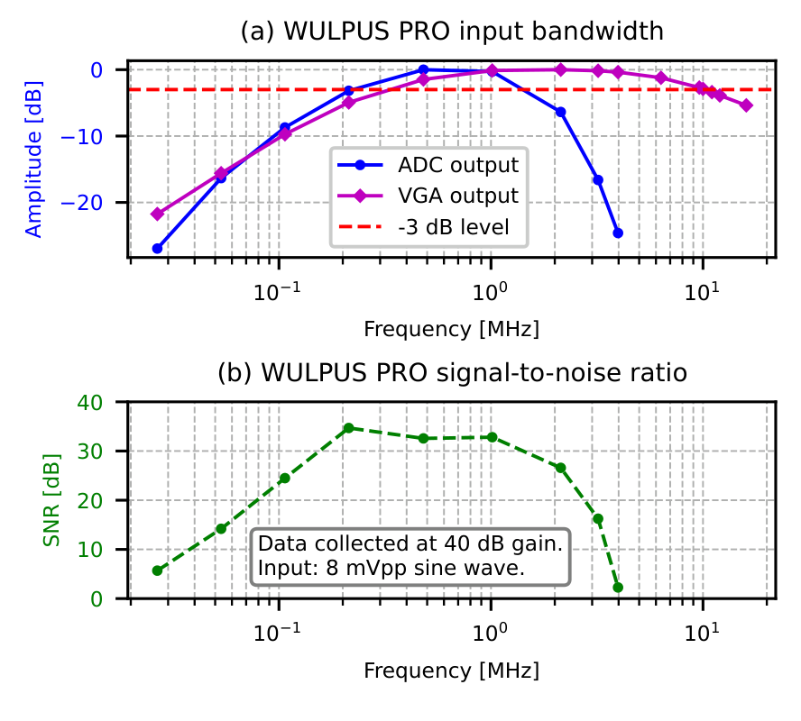
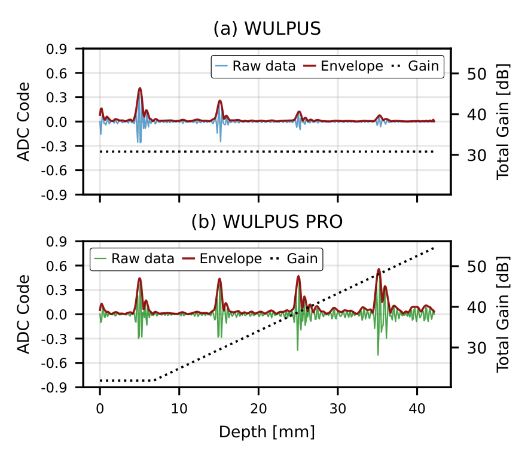
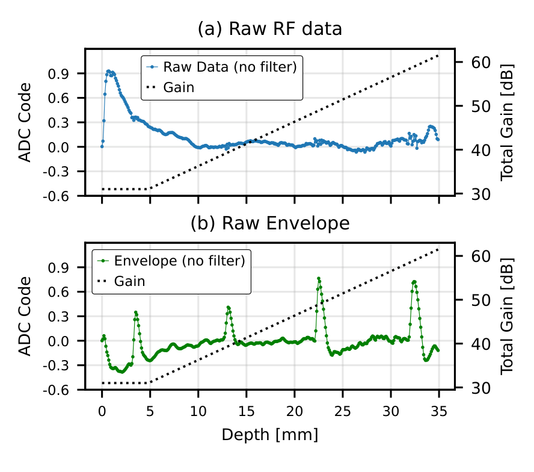
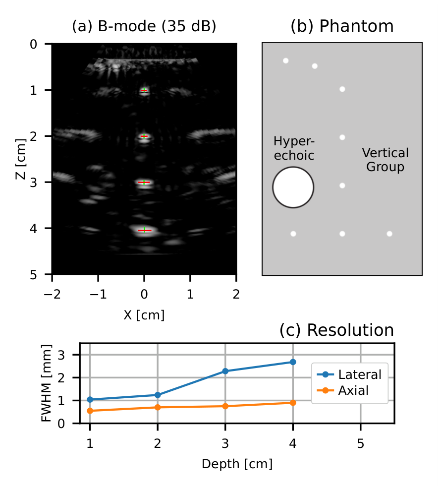
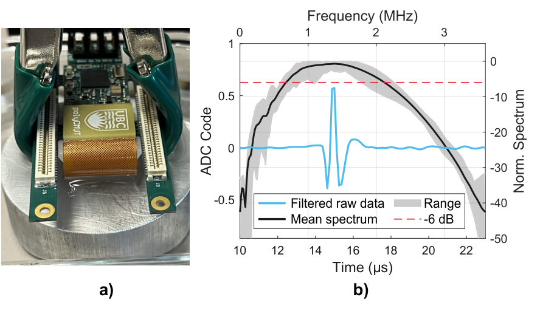
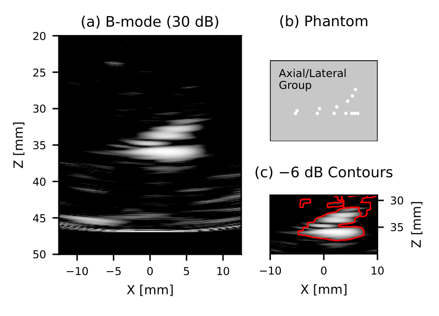

总览图
一块前端，三种回波读法
先用总览图建立全局认识：同一平台可输出原始回波、幅度包络，或为二维成像提供多通道数据。

WULPUS PRO 用一条接收链轮流读取 16 个通道，结合 30 V 激励、随深度变化的增益与可选模拟包络检测，在低功耗下扩展成像与换能器兼容性。它已在体模上实现 B 模式成像；无线主机、图像重建与长期人体佩戴仍需分别看待。
阅读依据：用户指定的 v1，16 页、13 图、2 表，全文含讨论与参考文献。官方记录标为 arXiv 预印本，未据此宣称已在期刊发表。以下展示用户补充的系统总览图与 8 张核心图，其余按证据角色索引；原始 PDF 保留于本地，不随页面上传。数值来自原文，合计与公式推算会明确标注；未运行开源代码或复现实物。
作者解决的是“开放、多模式超声采集如何同时保持小体积和低功耗”。核心贡献在系统整合：增强收发链、加入时间增益补偿、允许 RF/包络切换，并通过偏置与交流耦合兼容 PZT 和 CMUT。对计算机读者，最值得关注的是采集—通信—计算共同决定性能：一条 ADC 节省硬件，却需要跨时间拼成孔径；包络节省带宽，却丢掉相干成像需要的相位。
先用总览图建立全局认识：同一平台可输出原始回波、幅度包络，或为二维成像提供多通道数据。

| 模式 | 原文采集与传输条件 | 核心＋无线功耗 | 保留的信息 |
|---|---|---|---|
| I · A 模式 | 50 Hz PRF，1 RX，2.25 MHz，BLE | 35＋12＝47 mW | 原始 RF |
| II · 包络 | 50 Hz PRF，1 RX，2.25/5 MHz，BLE | 38＋12＝50 mW | 幅度包络，丢弃相位 |
| III · B 模式 | 300 Hz PRF，16 通道顺序 RX，2.25 MHz，Wi-Fi | 58＋314＝372 mW | RF，用于主机相干重建 |
来源：表 1，合计为本页相加，不是包含全部稳压损耗与主机重建的重新实测。三模式均为 8 Msps、400 样本/次。300 mAh×3.7 V≈1.11 Wh，按 47/372 mW 理想估算约 23.6/3.0 小时，未计电池可用容量与供电损耗。因此摘要的“1–2 天 / 超过 3 小时”应视为作者投射，不能当成完整充放电实测或由表 1 保证的续航。
架构把高压发射、可调增益、可选包络检测与外部通信分开，兼容压电与电容式换能器。

图 4 与表 1 将采集核心和无线链路分开测量；高采样率模式的通信成本尤其关键。

放大器之后还有 ADC 内部滤波。真正限制 RF 获取的是整条链，而不是放大器一个器件。

时间增益补偿（TGC）利用回波到达时间对应深度的关系，补偿传播衰减。

5 MHz 超声的快速振荡超过当前数字链能力，但其幅度包络变化更慢，可在模数转换前提取。

压电阵列的 B 模式体模实验，把电路能力连接到真正的空间重建。

对电容式微加工换能器，兼容性需要偏置、驱动和弱信号读取一起成立。

阵列小型化减少有效孔径和每通道面积，横向分辨率与灵敏度随之受限。

本页机制解释：对某个待成像位置，按发射到目标、目标到各接收阵元的传播时间，将各通道波形对齐后相加；来自同一点的回波相干增强。作者另用相干因子压低不一致回波，用动态接收加权控制孔径。数据在主机端由改造后的 PyBF 重建。
一幅图的采集时间 ≈ 16 / 300 s ≈ 53.3 ms
有效图像采集率 = 300 / 16 = 18.75 Hz
以上为序列推算，不是端到端延迟实测。由于每次发射只取得一个接收通道，重建隐含目标在序列内足够稳定；快速运动可能破坏通道间相干性。论文静态体模结果尚不能量化这一运动误差。TGC 放大深层信号，也会放大噪声，不能恢复本已丢失的信息。
阅读判断：价值在于让一组原本互相制约的工程功能在小型前端中同时成立。与上一代相比通道与激励幅度翻倍，又补入 TGC、包络与 CMUT 偏置支持；各功能均有相应测试承接。它不是新的声学成像理论。
表 2 的跨平台功耗排除无线，而且系统的同步 RX 数、PRF、采样率和成像算法不同。不能只拿总 mW 宣称全面优于 TinyProbe，或把复用阵列的 16 个位置当作 16 条同步接收电路来计算每通道功耗。
图 2：电源树，主机提供低压与电池电源，本地生成高压。图 3：柔性 PCB 与 16 通道 polyCMUT 微结构。图 6：40 dB 增益下的 SINAD—输入幅度曲线，1/2.25 MHz 峰值约 41/36 dB，均在约 4.9 mV 输入处达到，幅度过高后因失真下降。图 9：2.25 MHz 下 RF 与包络均可读出的对照。图 11：压电轴向—横向体模目标，−6 dB 轮廓显示约 0.5 mm 轴向、2 mm 横向目标间隔可分；目标可分离性与图 10 单点 FWHM 不是同一测量。表 1：三模式条件与功耗。表 2：跨平台比较，应按脚注核对功耗和 RX 定义。
作者声明开放硬件和软件：WULPUS PRO 仓库；重建基于 PyBF。本次未下载运行仓库，也未验证硬件文件、许可证覆盖范围与复现完整性。建议优先检查 BOM/原理图、装配版本、固件采集序列、TGC 时间参数与主机成像脚本，并复测无线链路和电池供电预算。
可穿戴超声不只需要柔软探头，还需要能随身携带的采集电子学。高性能系统可以并行读取很多通道，但体积和功耗会上升。WULPUS PRO 的选择是用一条接收链依次读取 16 个通道，在核心电路只消耗几十毫瓦的情况下保留二维成像能力。
作者做了三件重要的工程改进：提高发射幅度，用随深度增加的增益补偿衰减，再加入可以绕过高频载波的模拟包络通路。前两项帮助读到更弱的回波，后一项让低带宽 ADC 也能读取 5 MHz 换能器的幅度信息，但会丢掉相位。系统还支持 CMUT 所需的直流偏置，并做出了体模成像。
读这篇时一定要带着条件报数字：300 Hz 是脉冲重复频率，一张图要 16 次采集，所以是 18.75 Hz；58 mW 是核心功耗，Wi-Fi 另需 314 mW；0.7 mm 轴向分辨率对应压电体模约 3 cm 深处。论文证明了有用的小型超声采集平台，而长期人体佩戴、完整续航和运动成像仍有验证空间。